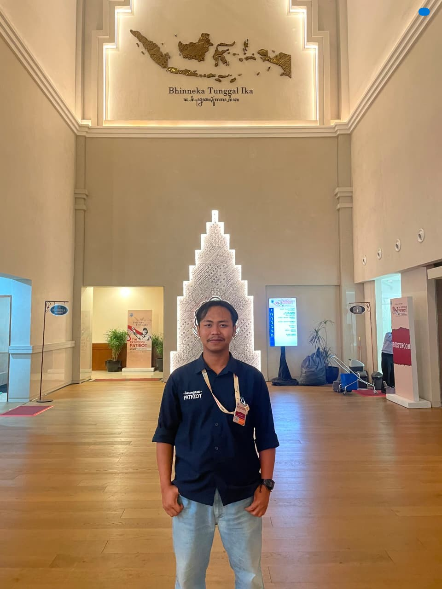
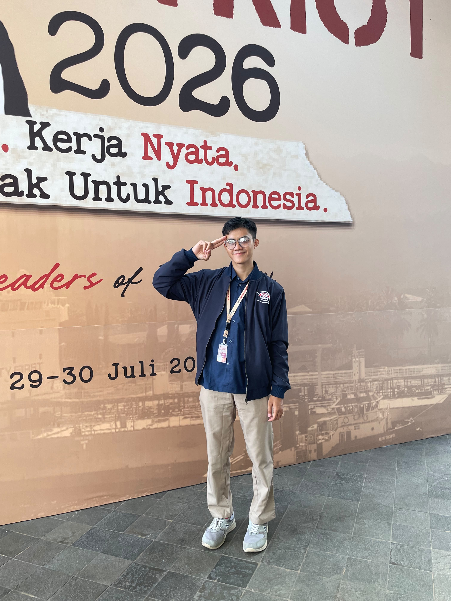
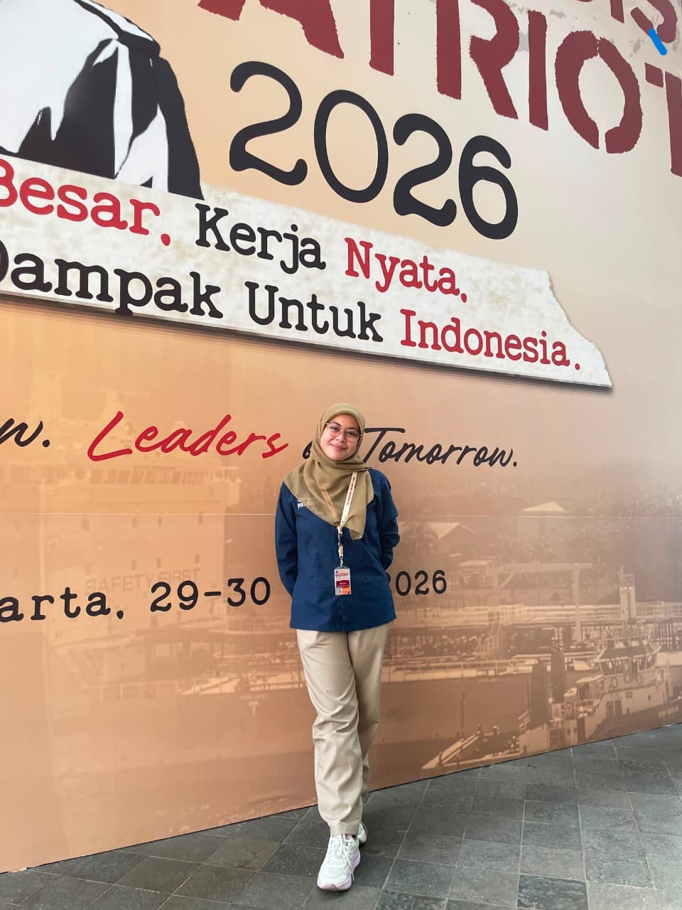
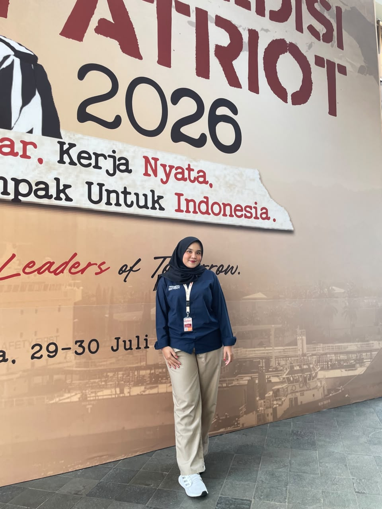
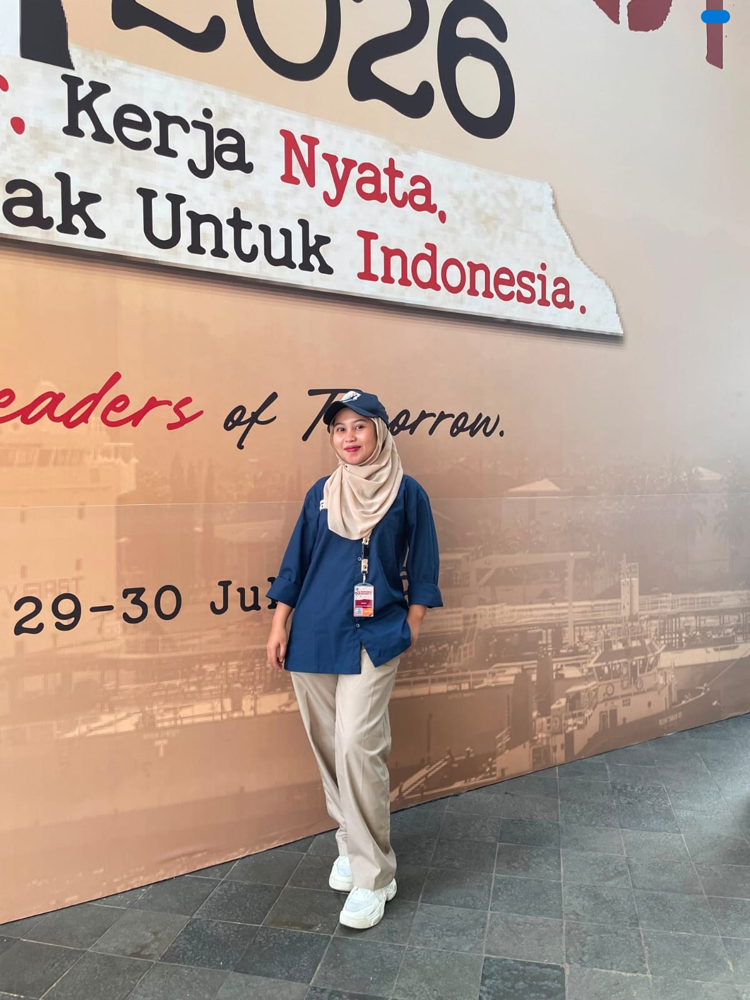

TIM EKSPEDISI PATRIOT 2026
Misi Besar, Kerja Nyata, Dampak untuk Indonesia

Misi Besar, Kerja Nyata, Dampak untuk Indonesia
Tim Ekspedisi Patriot (TEP) adalah program pengabdian dan penelitian berkelanjutan yang melibatkan mahasiswa dan akademisi untuk mendorong inovasi dan pengembangan potensi desa di kawasan transmigrasi secara nyata.
Kawasan transmigrasi memiliki potensi besar namun seringkali terkendala oleh akses teknologi dan inovasi pengolahan. Program ini lahir untuk menjembatani kesenjangan tersebut melalui kolaborasi perguruan tinggi dan masyarakat.

Membangun ekosistem ekonomi yang mandiri di Kawasan Transmigrasi Jelai Nibung dengan fokus pada optimalisasi pertanian jeruk organik, pendampingan UMKM berbasis teknologi tepat guna, serta peningkatan kapasitas sumber daya manusia (SDM) lokal secara berkelanjutan.

Farmasi
Sebagai Ketua Ekspedisi

Teknik Pertanian
Sebagai Peneliti Utama

Teknik Elektro
Anggota - Sebagai Web Develover

Keperawatan
Sebagai Koordinator Media

Agribisnis
Sebagai Koordinator Media

Kesehatan Masyarakat
Sebagai Koordinator Media
Memiliki pertanyaan atau ingin berkolaborasi dengan program kami? Jangan ragu untuk menghubungi kami melalui platform di bawah ini.
Hubungi Kami